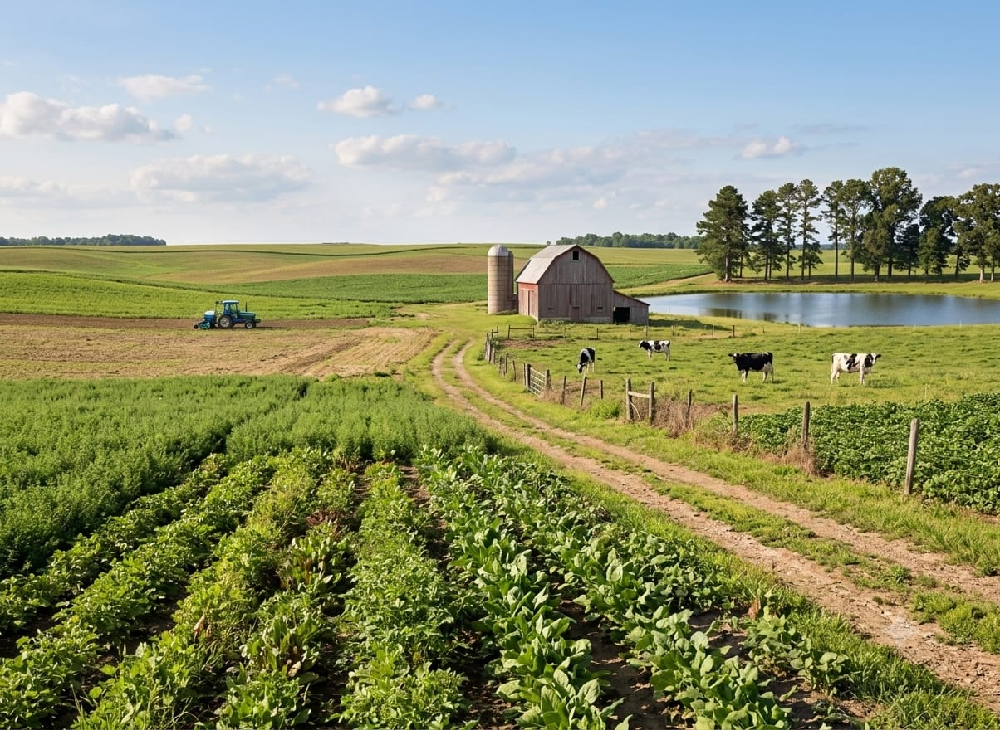
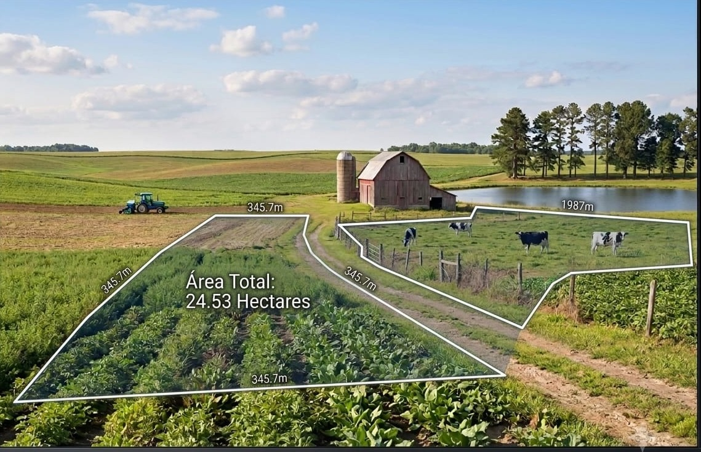
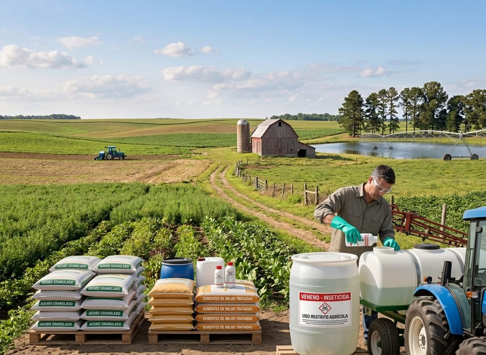
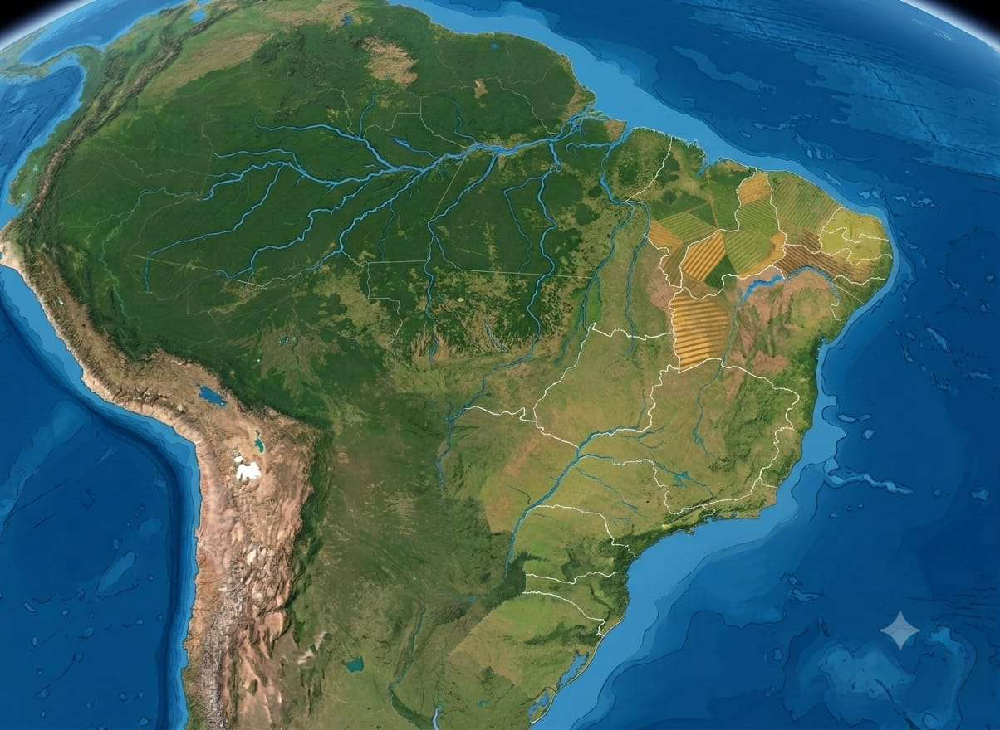

Bem-vindo à nossa página!
Explore nossas ferramentas e recursos para facilitar suas atividades no campo.

ferramentas
Ultilize nossas ferramentas para facilitar suas atividades no campo, aqui você encontrará soluções para diversas necessidades. Algumas das ferramentas incluem: cálculo de áreas, perímetros, sementes/mudas, adubo, veneno/defensivos e conversão de medidas. Além disso, você pode acessar um mapa interativo para visualizar informações geográficas relevantes para suas atividades agrícolas e previsão do tempo agrícola para planejar suas ações de forma mais eficiente. Todas as ferramentas são projetadas para serem intuitivas e fáceis de usar, permitindo que você obtenha resultados precisos e confiáveis, porém é importante lembrar que as ferramentas possuem caráter orientativo, e é sempre recomendável consultar um profissional técnico habilitado para prescrição em laudo. O site funciona offline, garantindo que você possa acessar as informações mesmo em áreas com conectividade limitada. Este site ainda esta em desenvolvimento, e estamos constantemente trabalhando para melhorar a experiência do usuário e adicionar novos recursos. Agradecemos suas sugestões para tornar nossas ferramentas ainda mais úteis para você. logo abaixo você encontrará imagens representando cada uma das ferramentas disponíveis, abaixo de cada imagem você encontrará o nome da ferramenta correspondente e a descrição de como utilizá-la.

área
Dentro da ferramenta de cálculo de áreas, você encontrará opções para calcular a área de terrenos de diferentes formas e tamanhos. Em perimetros, você poderá calcular o perímetro de terrenos, fornecendo as medidas dos lados; Um calculo de perímetro é útil para determinar a quantidade de material necessário para cercar uma área, como cercas ou muros. Em área, você poderá calcular a área de terrenos, fornecendo as medidas das bases e alturas. O cálculo de área é útil para determinar a quantidade de sementes, fertilizantes ou outros insumos necessários para o plantio.
conversão de medidas
Na ferramenta de conversão de medidas, você poderá converter entre diferentes unidades de medida, como hectares, metros quadrados e alqueires. Isso é útil para comparar áreas de terrenos ou calcular a quantidade de insumos necessários para o plantio. para utilizar a ferramenta de conversão de medidas, selecione a unidade de medida que deseja converter e a unidade para a qual deseja converter. Em seguida, insira o valor a ser convertido e clique no botão "Converter" para obter o resultado.

insumos
Na ferramenta de insumos, você poderá calcular a quantidade de sementes, fertilizantes ou outros insumos necessários para o plantio, fornecendo as medidas das áreas a serem cultivadas. Para o calculo de smentes/mudas, insira as medidas da área a ser plantada, as distâncias entre as covas e a quantidade de sementes ou mudas por cova. O resultado será a quantidade total de sementes ou mudas necessárias para o plantio. Para o calculo de adubo, insira as medidas da área a ser tratada e a dose recomendada, ou selecione o método de cálculo e digite a quantidade de adubo que possui para adubar uma area especifica. O resultado será a quantidade total de adubo necessária para o plantio. Para o calculo de veneno/defensivos, insira as medidas da área a ser tratada e a dose recomendada. O resultado será a quantidade total de veneno/defensivos necessária para o plantio.

mapa
Na ferramenta de mapa, você poderá visualizar informações geográficas relevantes para suas atividades agrícolas, como a localização de propriedades rurais, estradas e rios. O mapa interativo permite que você explore diferentes áreas e obtenha informações detalhadas sobre cada local. Você também pode medir distâncias e áreas diretamente no mapa, facilitando o planejamento de suas atividades no campo.
Conversões de medidas
Para converter as medidas, selecione a medida a ser conevertida e logo após selecione a medida para a qual deseja converter.
Calcular áreas
Para calcular a área, insira as medidas das bases e alturas (Caso tenha as medidas de apenas uma base e uma altura/largura e comprimento, basta digitar a mesma medida de base e de altura nos dois campos de digitação de valores, se colocar o valor de base na primeiro campo digite o mesmo valor no campo ao lado, da mesma forma no campo de altura).
Base
Altura
Calcular perímetros
Para calcular o perímetro, insira as medidas dos lados, a ordem não mudara o resultado.
Lado 1
Lado 2
Calcular sementes/Mudas
Para calcular a quantidade de sementes ou mudas necessárias, insira as medidas da área a ser plantada e as distâncias entre as covas, alem da quantidade de sementes ou mudas por cova.
Comprimento da área a ser plantada
Largura da área a ser plantada
Distância entre covas em (comprimento)
Distancia entre covas (largura)
Sementes/Mudas por cova
Calcular adubo
Para calcular a quantidade de adubo necessária, insira as medidas da área a ser tratada e a dose recomendada, ou selecione o método de cálculo e digite a quantidade de adubo que possui para adubar uma area especifica.
Calcular veneno/defensivos
Para calcular a quantidade de veneno/defensivos necessária, insira as medidas da área a ser tratada e a dose recomendada.
Previsão do Tempo Agrícola
| Data | Temp. Mín / Máx | Chuva (%) | Vento (km/h) |
|---|
Área do mapa: 0.00 hectares